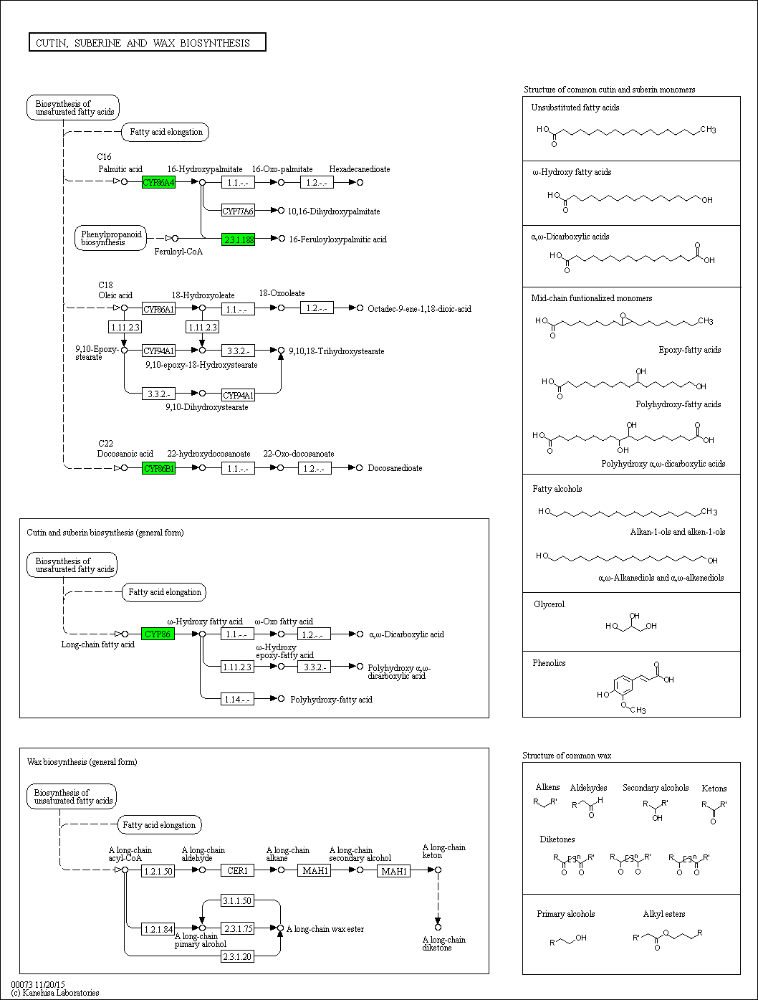

Cutin, suberine and wax biosynthesis - Oryza sativa japonica (Japanese rice) (RefSeq)
[
Pathway menu
|
Organism menu
|
Pathway entry
|
Download KGML
|
User data mapping
]
Reference pathway
Reference pathway (KO)
Reference pathway (EC)
Reference pathway (Reaction)
-----< Set personalized menu >-----
-----< Sort below by alphabet >-----
Arabidopsis thaliana (thale cress)
Arabidopsis lyrata (lyrate rockcress)
Capsella rubella
Eutrema salsugineum
Brassica rapa (field mustard)
Citrus sinensis (Valencia orange)
Citrus clementina (mandarin orange)
Theobroma cacao (cacao)
Eucalyptus grandis (rose gum)
Glycine max (soybean)
Phaseolus vulgaris (common bean)
Medicago truncatula (barrel medic)
Cicer arietinum (chickpea)
Fragaria vesca (woodland strawberry)
Prunus persica (peach)
Prunus mume (Japanese apricot)
Malus domestica (apple)
Pyrus x bretschneideri (Chinese white pear)
Cucumis sativus (cucumber)
Cucumis melo (muskmelon)
Ricinus communis (castor bean)
Jatropha curcas
Populus trichocarpa (black cottonwood)
Vitis vinifera (wine grape)
Solanum lycopersicum (tomato)
Solanum tuberosum (potato)
Beta vulgaris (sugar beet)
Oryza sativa japonica (Japanese rice) (RefSeq)
Oryza sativa japonica (Japanese rice) (RAPDB)
Oryza brachyantha (malo sina)
Brachypodium distachyon
Sorghum bicolor (sorghum)
Zea mays (maize)
Setaria italica (foxtail millet)
Phoenix dactylifera (date palm)
Elaeis guineensis (African oil palm)
Musa acuminata (wild Malaysian banana)
Amborella trichopoda
Selaginella moellendorffii
Physcomitrella patens subsp. patens
Chlamydomonas reinhardtii
Volvox carteri f. nagariensis
Coccomyxa subellipsoidea
Puccinia graminis
Melampsora larici-populina
Phytophthora infestans
Phytophthora sojae
Sorangium cellulosum So0157-2
184%
150%
122%
100%
82%
67%
55%

 Cutin, suberine and wax biosynthesis - Oryza sativa japonica (Japanese rice) (RefSeq)
Cutin, suberine and wax biosynthesis - Oryza sativa japonica (Japanese rice) (RefSeq)
 Cutin, suberine and wax biosynthesis - Oryza sativa japonica (Japanese rice) (RefSeq)
Cutin, suberine and wax biosynthesis - Oryza sativa japonica (Japanese rice) (RefSeq)